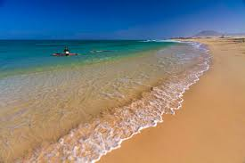

Grandes Playas de Corralejo
Corralejo, Norte de Fuerteventura
Extensión de más de 10km de arena blanca y fina junto al Parque Natural de las Dunas. Aguas turquesas poco profundas, perfectas para familias. Zona norte con viento ideal para windsurf y kitesurf.
Aparcamiento
Hamacas
Windsurf
Chiringuitos
Ver en Google Maps